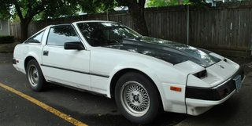

-
depends on how large your jets are. and no, you won't be at WOT all the time. LOL. What kind of track are you on? is you driftin?300zxturboftw wrote: Let's say I fill up the entire stock washer bottle with a 50/50 mix. If I'm on the track at WOT most of the time, how long till all of the mixture is used up? I have been considering it, but it almost sounds like it's only useful when at the dragstrip or autocross.
what you could do is set up a map sensor on a board and only trigger the meth at certain loads rather than WOT. -
I live near very open tracks like Autobahn and Road America where you are on the throttle a lot more than the brake. I like the idea of MAP sensor to only use at certain loads. Only time I would want it running is at full boost. Still not sold on it because if it runs out and I'm tuned for it then bad things can happen. Although…I guess I could tune without it and then use it as a safety device.
This stuff probably burns through MAF sensors, right (as in ruins them)? Was thinking I could send it pre-MAF and with a cooler charge/denser air the MAF will adjust AFR's accordingly. That would kind of be stupid anyhow considering after the MAF is more effective to use for "safety device" type use.
Sigh, my posts suck lately. I need to get off here and work on my car.Usual Z31 suspect: Garage Queen (aka broken)

-
I've seen guys put their injectors right at the throttle body, and that would save(?) your MAF if it does damage it. But you make a good point, the MAF might be able to adjust AFR accordingly.300zxturboftw wrote: This stuff probably burns through MAF sensors, right (as in ruins them)?
2001 Mazda Miata LS
also a 1989 Nissan 240SX
50th AE Build Thread SOLD 2015 -
Pulsecode,
I'm thinkin about getting my car setup with a Water injection system.
Now,
If I run the setup right before the throttle body, this mean my MAF won't consider the real 'air' density going to to engine, making my AFR leaner.
Did you have any problem with that so far? My plan is to max-out the OEM setup (T3 & injectors) next summer. All I want is to stay away from detonation. I'm wondering if this setup will let me run leaner without detonation since the air temperature will be lower. On top of that I'll run 94 octane fuel.
What do you think?
''And at the end of the day you have a Mitsubishi. It's like masturbating with your own tears.'' Neit86T -
Assuming you dont have a I/C, run the nozzle pre compressor If you have a I/C, place the nozzle before the TB I put mine obout 7-8" from the TB.
Read…
http://www.alcoholinjectionsystems.com/ … _info.html
. -
No, the MAF won't "see" the difference in the water/ methanol injected. Since you are on the stock T3 (Like me)
I would recommend the small nozzle. The part # is listed on the first page. Also, just as an aside, It has been my experience
that when you "max" anything out, it tends to wear out/ breaks down quickly. Anything above 12-14 psi on the T3 is going to
yield you minimal power results and generate alot of heat. Running something at 85% of a systems' max is usually safe.
Z-31Turbo wrote:Pulsecode,
I'm thinkin about getting my car setup with a Water injection system.
Now,
If I run the setup right before the throttle body, this mean my MAF won't consider the real 'air' density going to to engine, making my AFR leaner.
Did you have any problem with that so far? My plan is to max-out the OEM setup (T3 & injectors) next summer. All I want is to stay away from detonation. I'm wondering if this setup will let me run leaner without detonation since the air temperature will be lower. On top of that I'll run 94 octane fuel.
What do you think?Everything is Meaningless. -
As my now knocking motor caught the shitty rear end of. Here in Alabama, I was running 10-12 psi with spikes possible up to 15 psi without an intercooler or meth injection, and it held up fairly well. Only weird thing is that the knock started when I wasn't even in boost, but with my next motor meth inj. seems the way to go.PulseCode wrote: Anything above 12-14 psi on the T3 is going to
yield you minimal power results and generate alot of heat. Running something at 85% of a systems' max is usually safe.
2001 Mazda Miata LS
also a 1989 Nissan 240SX
50th AE Build Thread SOLD 2015 -
So I'm a little bit confused, do you actually need a pulse width modulator to control your pump, or can you just use the proper jet size in the charge pipe? If you use the pulse width modulator how do you know where to set the on/off time on the pump? -
No you do not need a PWM to control the pump. On stock T3, start with a small jet.
The pump is controlled (Off or On) by the Hobbs pressure switch- available thru NAPA.
Adjust the screw under the rubber plug for the psi. setting you want it to come on at.
IF you use one, Pulse width modulator can be adjusted manually from 0-100% duty cycle.
The original site that I followed directions from. http://www.turbomirage.com/water.htmlEverything is Meaningless. -
Do you have a delay from when the switch closes the relay, powers the pump, fills the line then injects?
I used a pressurized system with a small solenoid valve just before the nozzle, and then a simple purge circuit to fill the line with fluid before the engine starts. The hobbs opens the solenoid instead of activating the pump, its instant, and you can use a much smaller pump because it doesnt need to work as hard to get the pressure up to the solenoid.
Also, drilled hole in the bottom of the washer tank, tapped it, then a small âshark biteâ type quick disconnect ( I think I used 1/8, Iâll have to look) screws really tight into the tank. Itâs been sitting full for over a month and hasnât leaked a drop. I made a small 2âx9â PVC reservoir tank that hides under the master cylinder, adds a few cups more fluid but still uses the level indicator in the main washer tank. -
This concept is new to me but the price is right
I have a couple questions
1. Keeping with the vacuum-line-ness of the z31, is there anyway one could trigger the injection of of the intake manifold? Where your cruise/ac vacuum line comes from?
Good idea… Bad idea?
here it is…
2. Any benefits on a mildly modified NA 150k+ on the engine… always running 87 octane… any chance this could give the ol beast a leg up? If not just for cleaning out the engine? Gas milage improvement claims on the 50/50 kits for NA cars… What are your thoughts on this?
I plan on doin the whole nat2 thing and could still utilize the system -
Sorry to bump an aging thread but I was thinking of fabbing a 45deg 1/8 npt bung into my intercooler setup. Would there be any gain in firing it towards the engine, away from the engine or just straight in?DD:
86 Black Turbo 5spd
The Fallen:
84 red n/a auto Slicktop, 86 Black 2+2 n/a 5spd
Parting Currently:
86 White Turbo 5spd, 88 n/a 5spd, 84 AE, 88 Shiro #64
Garage Sale -
If your injection nozzle is misting properly, I see no measurable results happening.MADMIKE wrote: Sorry to bump an aging thread but I was thinking of fabbing a 45deg 1/8 npt bung into my intercooler setup. Would there be any gain in firing it towards the engine, away from the engine or just straight in?
Forced air induction is sucking in the spray quickly. But, I still like the idea. :-)Everything is Meaningless. -
I don't think it will have a serious affect but I would love to avoid puddling.DD:
86 Black Turbo 5spd
The Fallen:
84 red n/a auto Slicktop, 86 Black 2+2 n/a 5spd
Parting Currently:
86 White Turbo 5spd, 88 n/a 5spd, 84 AE, 88 Shiro #64
Garage Sale -
just out of curiosity, how did you tune your setup, or did you even tune it? Like did you just install it put in the sprayer you thought would be right and take it for a rip, or did you actually take it to get dyno tuned?

Copyright © 2006–. All rights reserved. Privacy Policy